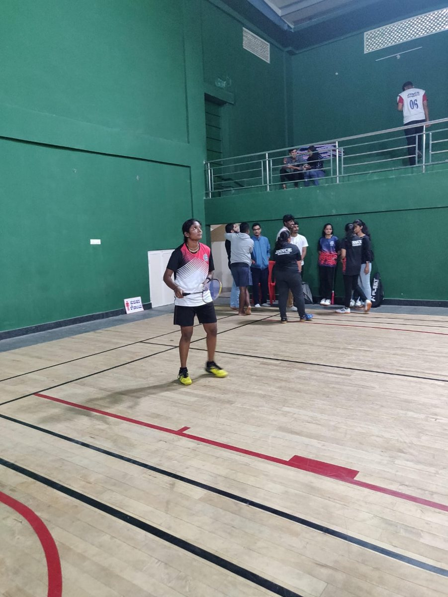
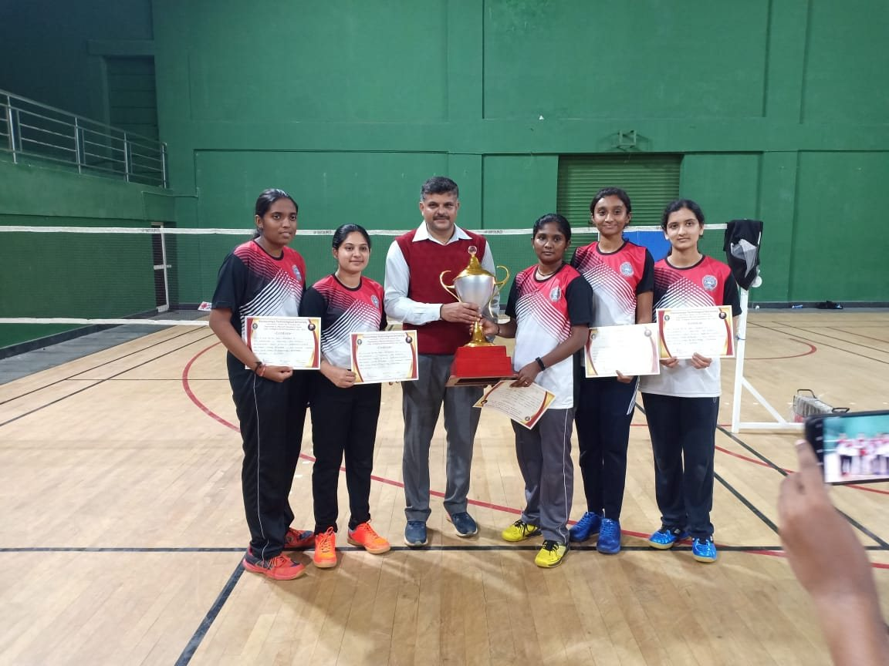
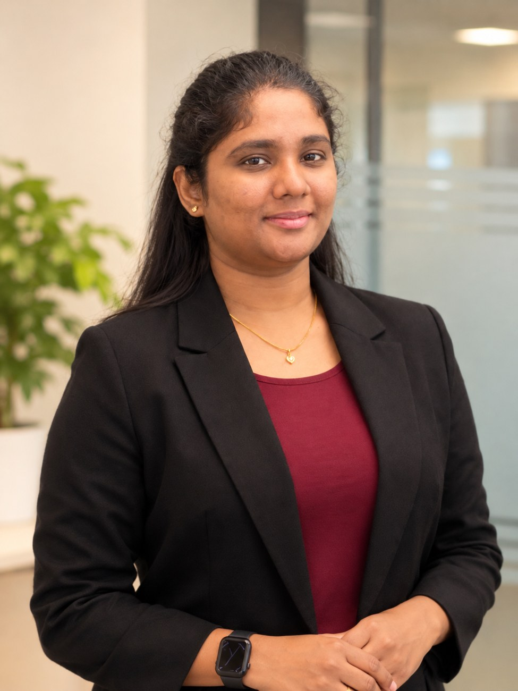
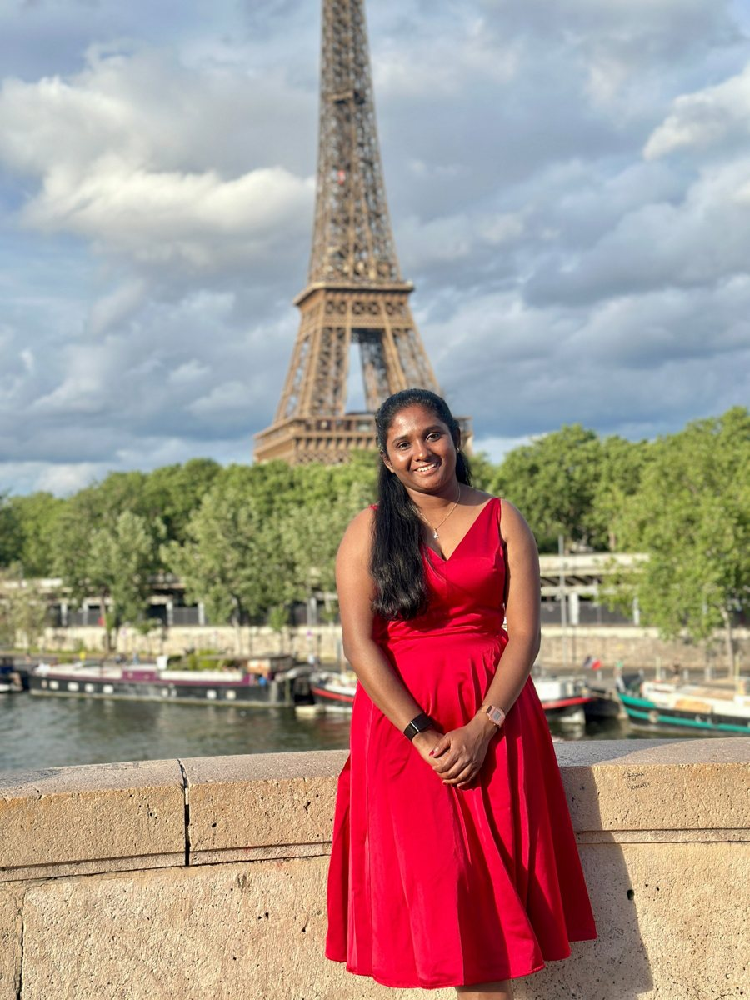
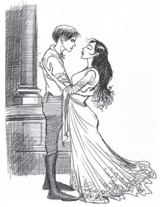
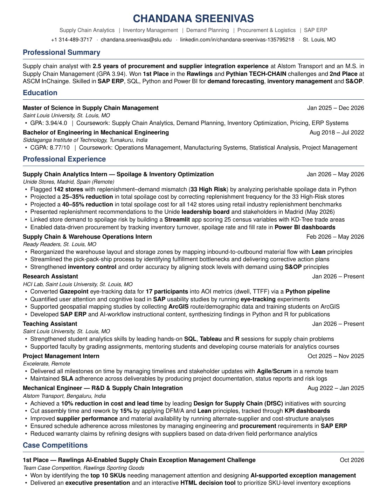
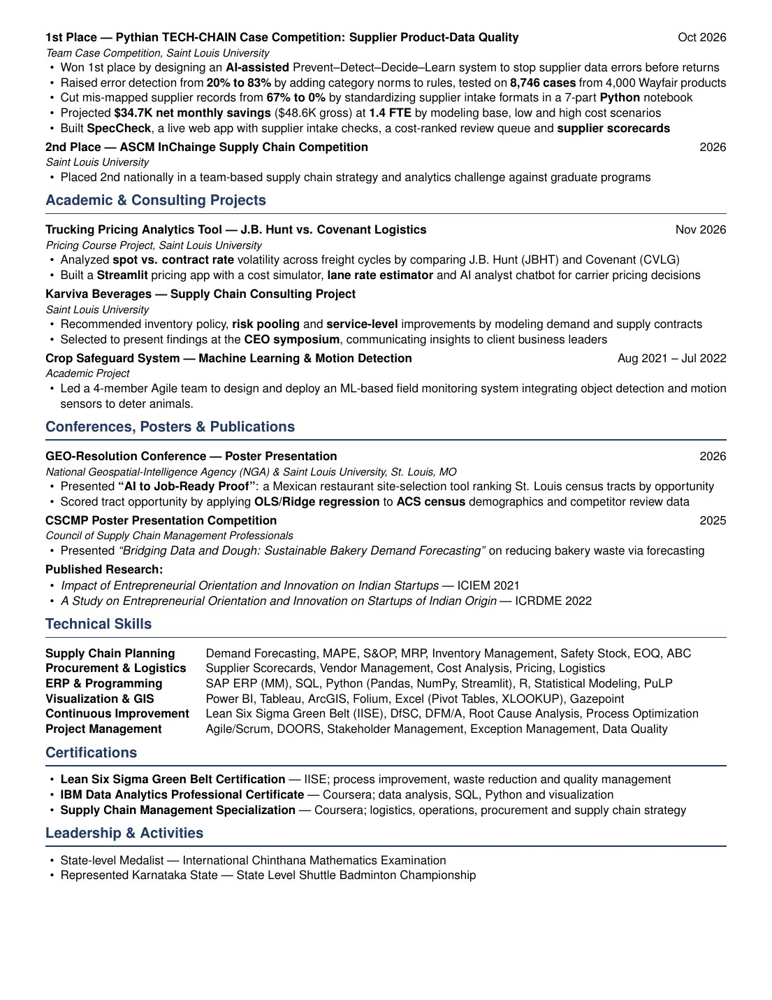

Badminton State level player
I represented Karnataka State at the State Level Shuttle Badminton Championship and won team trophies along the way. Badminton taught me quick decisions under pressure.
Supply Chain Analyst
2.5 years of procurement and supplier integration at Alstom Transport, an MS in Supply Chain Management from Saint Louis University (GPA 3.94), and first place in two supply chain case competitions in 2026.

Select any project to see the full story.
Tools and methods I use every week.
Analytics, procurement, demand planning or inventory roles. Open to relocate.
Sport, art and travel. Each one teaches me something I bring back to work: discipline, patience and a love for new places.


I represented Karnataka State at the State Level Shuttle Badminton Championship and won team trophies along the way. Badminton taught me quick decisions under pressure.

Madrid for study abroad, then Paris and more of Europe.

Pencil sketches and paintings. Art keeps me patient and detail focused.
Brown belt. Years of training in focus, discipline and respect.
Regular workouts keep my energy up for long project days and competitions.
I started by designing parts, moved into procurement and supplier integration at Alstom Transport, and now build data tools that help companies decide what to stock, where to open and how to price.
Along the way I learned that the best supply chain decisions come from mixing engineering discipline with good data.
Siddaganga Institute of Technology, India. CGPA 8.77/10
Led a 4-member team to build the Crop Safeguard System, and published two research papers on entrepreneurial orientation and innovation in Indian startups.
Alstom Transport, Bengaluru
Cut cost and lead time 10% through Design for Supply Chain work with sourcing, and cut assembly time and rework 15% with DFM/A and Lean.
Saint Louis University. GPA 3.94
Research Assistant in the HCI Lab and Teaching Assistant for SQL, Tableau and R. Internships with Unide Stores in Madrid and Ready Readers in St. Louis.
Supply Chain Analytics, Inventory Management, Demand Planning, Procurement and Logistics, SAP ERP


Recruiters, hiring managers and anyone working on a supply chain, inventory or pricing problem. I usually reply within a day.